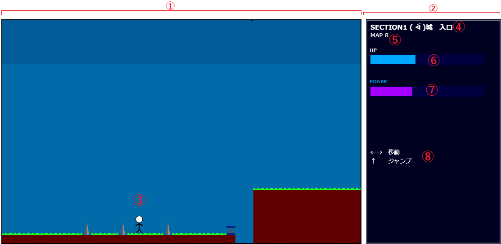

エリア紹介
ステージ１ 無職による無職への突撃

敵の数：４体
セクション１ ٩( ᐛ )و城入口 庭
穴が多いエリア。敵は出ない。
セクション２ ٩( ᐛ )و城連絡通路トンネル
初の戦闘があるくらいであとは特にない
セクション３ ٩( ᐛ )و城 本館連絡橋
上下する浮遊炎に注意。慎重に進んで、どうぞ。
道中の邪魔役は倒せないので注意。
セクション４ ٩( ᐛ )و城入口
エリア１のボス「ニートオブムショーク」戦あり。
トップ
ストーリー
昔々あるところに若者（２４歳 無職）がいました。
しかし、パソコンがほしいと思った彼は就職を決意
近くのハローワークを目指すことにします
しかし、その国では若者の就職を命がけで拒むもの、
反就業派閥٩( ᐛ )و（読み：はんしゅうぎょうはばつぱぁ）
という過激派組織が爆誕。
また不運にも、若者の家と最寄りハローワークの間に
反就業派閥の本部٩( ᐛ )و城（読み：ぱぁしろ）
が完成してしまいます。
この若者はパソコンがほしいので強行突破することにしました。
壮大な物語ですね。
画面の見方
こちらがゲーム中の画面です
①メイン画面 ゲーム本編の画面です
②サブ画面 HPやパワーゲージなどが確認できます
③操作プレイヤー 操作する自機です
④セクション名 今いるセクションです。
⑤MAP番号 何枚目の画面にいるかを表しています
⑥HPゲージ 現在のHPを表しています。
⑦パワーゲージ 現在のパワーを表しており、満タンになると白くなります
⑧可能操作 現在可能な操作を表しています。
操作方法
十字キーとスペースキーを使用します。
なお、会話中など一部は操作できません。
【基本の操作】
横移動 左右キー（←→キー）
ジャンプ 上キー（↑キー）押す時間によってジャンプ高が若干変化します
【パワーゲージが溜まっている場合】
必殺技 スペースキー
パワーゲージは移動によって溜まっていきます。
道中にある針や、敵の攻撃に触れるとHPが減ります
HPがなくなるとミス扱いになりパワーゲージも大幅に減ってしまいます
マグマに触れたり穴に落ちると一発でミスになります。気をつけましょう
障害物のなかにはジャンプ台など、移動特化ギミックもあります。
必殺技について
必殺技は発動するとパワーゲージを全部消費する代わりに
敵に大ダメージを与えたり、針を壊したりできます。
進めないマップがあるなら必殺技を使ってみましょう
エリア紹介
ステージ１ 無職による無職への突撃
敵の数：４体
セクション１ ٩( ᐛ )و城入口 庭
穴が多いエリア。敵は出ない。
セクション２ ٩( ᐛ )و城連絡通路トンネル
初の戦闘があるくらいであとは特にない
セクション３ ٩( ᐛ )و城 本館連絡橋
上下する浮遊炎に注意。慎重に進んで、どうぞ。
道中の邪魔役は倒せないので注意。
セクション４ ٩( ᐛ )و城入口
エリア１のボス「ニートオブムショーク」戦あり。
権利表記とか
原案：湯豆腐サイト管理人
シナリオライター：湯豆腐サイト管理人
メインプログラム：湯豆腐サイト管理人
サウンドエフェクト：湯豆腐サイト管理人
作曲・編曲：湯豆腐サイト管理人
デバッカー：湯豆腐サイト管理人
テストプレイヤー：湯豆腐サイト管理人
説明書イラスト：湯豆腐サイト管理人
総合監督：湯豆腐サイト管理人
総合開発：湯豆腐サイト管理人
発表：湯豆腐サイト管理人
このゲームはリンクフリーなので色んな場所に貼り付けてどうぞ。
ソースコードも公開してるので改造したい方いればご自由に
©2024 yudofusite
タイトル考えてない -Burning NEET ver1.0